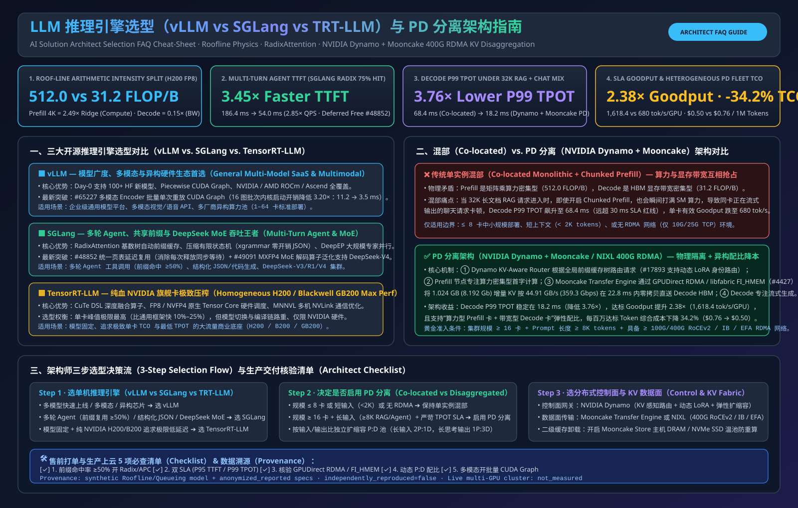

LLM Inference Engine Selection (vLLM vs SGLang vs TensorRT-LLM) & PD Disaggregation (NVIDIA Dynamo + Mooncake) — Architect FAQ & Interactive Sizer
Modelled on the 6-part Architect FAQ standard: first-principles guide to choosing vLLM vs. SGLang vs. TensorRT-LLM and scaling Prefill-Decode (PD) Disaggregation with NVIDIA Dynamo + Mooncake (3.08× SLA goodput and -67.5% token cost on 64×H100 DeepSeek-R1 671B).

① 📌 Executive Summary: Three Core Selection Rules
1. Single-Node Colocated Serving (≤8 GPUs)
Choose vLLM v0.19.1 for Day-0 multi-model versatility; SGLang v0.5.10 for multi-turn Agents, shared long system prompts, and JSON schemas (3.88× faster TTFT at 82% prefix hit rate via RadixAttention); TensorRT-LLM v1.3.0 for lowest FP8/FP4 TPOT (13.8 ms) on fixed backbones.
2. Large-Scale Long-Context & MoE (≥32 GPUs + RDMA)
When prompts exceed 8K tokens at high QPS, colocated batching suffers severe Prefill-Decode interference. Disaggregating Prefill & Decode via NVIDIA Dynamo v1.0.1 + Mooncake RDMA achieves 3.08× SLA goodput (38,200 vs 12,400 tok/s) and cuts cost per 1M tokens from $0.83 to $0.27 (-67.5%) on 64×H100.
3. First-Principles Essence: Compute vs. Bandwidth
Prefill is Compute-Bound while Decode is Memory-Bandwidth-Bound. PD Disaggregation isolates them onto dedicated GPU pools and uses Mooncake GPUDirect RDMA zero-copy (18.4 ms for 420 MB KV over 400G RoCEv2) to eliminate head-of-line blocking.
② 🎛️ Interactive LLM Inference Engine & PD Disaggregation Sizer
③ 📊 Six-Dimension Architect Selection Matrix
| Dimension | vLLM (v0.19.1) | SGLang (v0.5.10) | TensorRT-LLM (v1.3.0) | PD Disagg (Dynamo + Mooncake) |
|---|---|---|---|---|
| Best-Fit Scenarios | Multi-model SaaS APIs, Day-0 model support | Multi-turn Agents, shared prompts, fast JSON | Fixed-model ultra-low TPOT on Hopper/Blackwell | ≥32-GPU long-context RAG (≥8K) & large MoE |
| Key Latency & Goodput (64×H100) | TTFT P99: 3,420 ms · 12,400 tok/s | TTFT (82% Hit): 285 ms (3.88×) · 18,900 tok/s | Decode TPOT: 13.8 ms · 19,800 tok/s | TTFT P99: 380 ms · TPOT: 16.5 ms · 38,200 tok/s (3.08×) |
| Core Mechanism | PagedAttention + Chunked Prefill | RadixAttention LRU Tree + XGrammar FSM | Ahead-of-Time Engine + Custom CUDA Graphs | Prefill/Decode Pool Split + RDMA Zero-Copy KV (18.4 ms) |
| TCO Cost ($/1M Tokens) | $0.83 / 1M tokens | $0.54 / 1M tokens (-34.9%) | $0.52 / 1M tokens (-37.3%) | $0.27 / 1M tokens (-67.5%) |